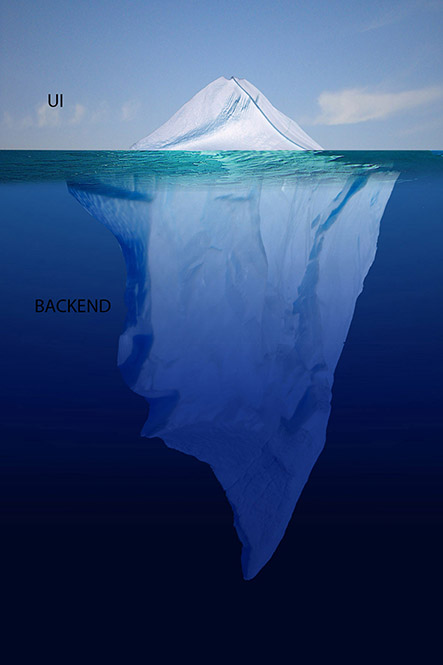
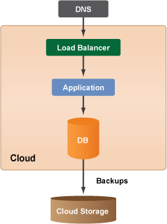
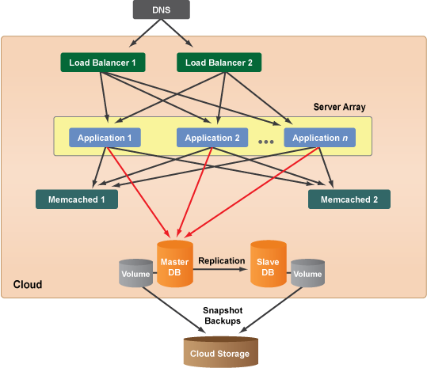

HMDA
Building a Distributed Platform for Collecting U.S. Mortgage Data
Created by @jmarinotero
Juan Marin Otero
- Software engineering for the past 15+ years
- GIS & Open Source
- Now: Solutions Architect @ Chief, responsible for architecting HMDA at CFPB
- Previously:
- CTO at Boundlessgeo
- Lead Developer for National Broadband Map at FCC
- Solutions Engineer at Esri
Hum-What??
Home Mortgage Disclosure Act
The Home Mortgage Disclosure Act (or HMDA, pronounced HUM-duh) is a United States federal law that requires certain financial institutions to provide mortgage data to the public. Congress enacted HMDA in 1975.
- Wikipedia
HMDA
Main objectives
- Determine whether financial institutions are serving the housing needs of their communities
- Assist public officials in distributing public-sector investments to attract private investment where it is needed
- Identify possible discriminatory lending practices
HMDA Today
- Legacy system
- Convoluted filing process; paper / fax still used
- Publication of data takes months (should take hours)
HMDA moving forward
- Large data collection (tens of millions of records)
- Many entities submit data (several thousand)
- 30 years of historical data
- Schema has changed several times; it will change again with new rule
- Three main work streams: data intake, data management and publication
Additionally:
- Minimize time to market
- Cost effective (budget)
- Reactive manifesto: responsive, resilient, elastic and message driven
- We will log everything
- We will measure everything
Some additional challenges
- Most financial institutions file at the last minute. Large spike in usage
- Some "time to market" is statutory. Can't fail here
- We have a budget; Can't scale by throwing money at this
- No one wants to experience Healthcare.gov again ==> Uptime!
Not a website
The need to scale: Cloud Native Applications
- Aware of infrastructure, scales resources up and down appropriately
- Doesn't assume much about users and environment. Expects failure
- Cost aware, adapts to different runtime conditions
- Resilient to disaster
- Can be deployed to multiple infrastructure options
- Incremental deployment, completely testable
This won't work
This is better, but still not good enough
Microservices
Main idea: loosely coupled, narrowly focused services that can be deployed independently
If someone tells you they have to be < 100 LOC, they probably have never built them
Monoliths and services

Microservices

Future HMDA Architecture
HMDA is a Platform
Microservices, logging, metrics, service discovery, etcSome nice features
- Mesos allows treating a cluster of machines a a single machine. Don't care if a few servers go down
- Containers allow rapid prototyping and production isolation of applications. Ideal to build microservices
- DevOps centric approach allows for rapid deployment with no downtime
- Logging and measuring are good for security and operations of the platform
HMDA sample application: Grasshopper
Why doing this is so hard in Government
- Procurement
- Open Source Policy
- Organizational Culture
- Cybersecurity
Procurement
Hasn't been an issue at CFPB as far as I'm concerned. This can the biggest IT project killer in GovernmentOpen Source Policy
You need to have one. Fork CFPB's source code policy, adapt to your agency. Have a great reason to choose proprietary software. Most times there isn't oneOrganizational Culture
Problem: Having a creative and innovative culture within Government is hard. When you hear "no" 10k times, you give up
Solution: Don't give up. Educate, teach others, show and lead by example.
Organizational Culture
Problem: Bureaucracy that gets in the way of Getting Things Done
Solution: Be merciless in destroying every process that is superfluous. Many people will hate you for this. Keep destroying

Solution: ?